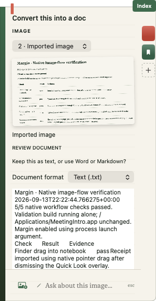
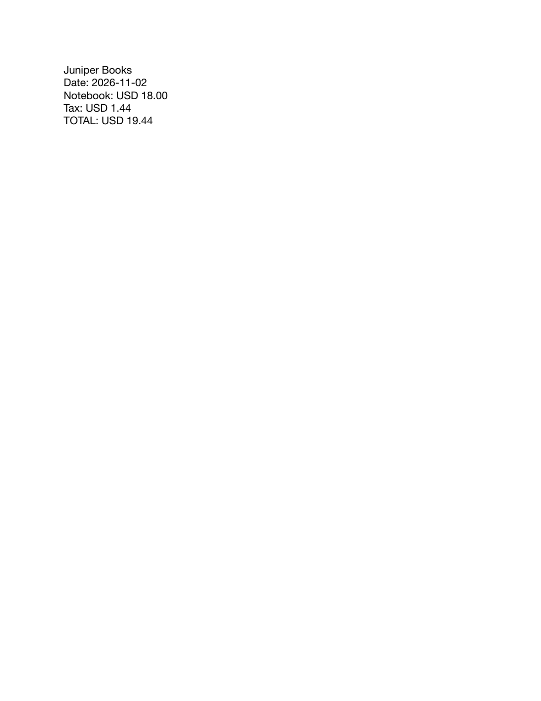

Image to document · TXT first
2026-09-14T02:13:16.627881+00:00
TXT draft; follow-up offers Word or Markdown; save requires user confirmation
All three formats are supported. Saying “Word please” changed the native picker and filename without rereading the image.
Build passed · 10/10 document export checks · 10/10 filesystem checks · saved-draft checks passed.

Native screenshot conversion defaults to Text
Word export rendered and inspectedEvidence limits
- DOCX contains editable text and tab-separated rows, not reconstructed screenshot layout or native Word tables.
- One receipt export fixture and one native user screenshot; not a comprehensive OCR accuracy evaluation.
- Native Save confirmation was not exercised for document files; output encoders and filesystem safety were tested independently.
- Dense or unreadable images still require review; interrupted/length-limited output is rejected.
Timestamped results